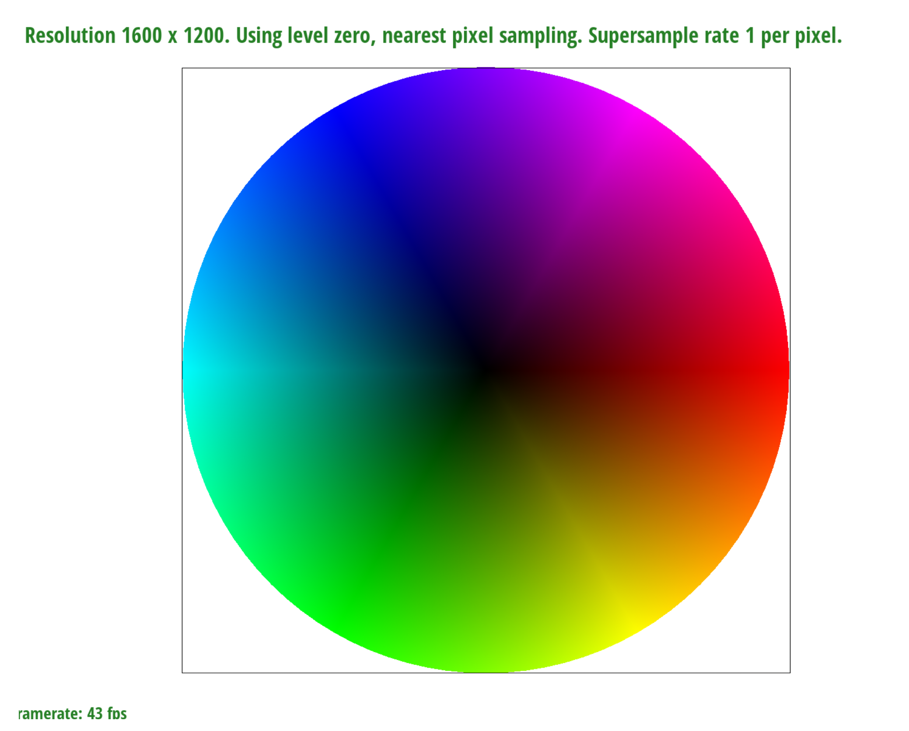
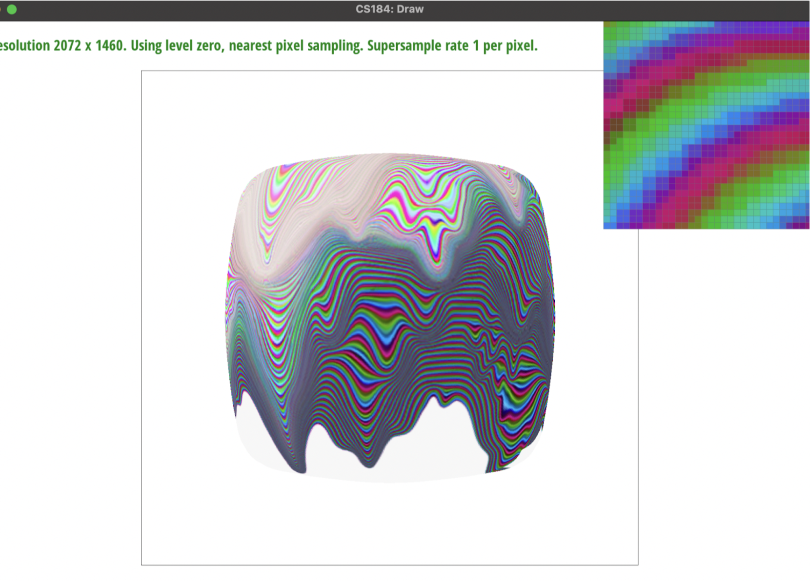

Overview
Give a high-level overview of what you implemented in this project. Think about what you've built as a whole. Share your thoughts on what interesting things you've learned from completing the project.
Section I: Rasterization
Part 1: Rasterizing single-color triangles
- We rasterize triangles by finding all the pixels that fall within the bounding box of the triangle and then checking to see if the center of the pixel passes the three-line test.
- Our algorithm is no worse than one that checks each sample within the bounding box of the triangle as that is exactly our algorithm.
Part 2: Antialiasing triangles
- We added two inner for loops within each 1x1 pixel (previously implemented in task 1). Here, we looped through every subsample based on the sample_rate. If the inner dots were in the image, we added that pixel’s color to sample_buffer. Supersampling is useful in that it helps create smoother lines and less “jaggies” which occur where there are fast changing signals. In the rasterization process, I changed the dimensions of the sample buffer both in RasterizerImp::set_framebuffer_target() and RasterizerImp::set_sample_rate(). In resolve_to_framebuffer(), we added the needed color to itself every time the inner pixel fell in the image. This means that for example if the pixel is split up into a 4x4 of subpixels and only 14 of the 16 subpixels are in the image, then the previous sentence made the color for that 1x1 original pixel 14 * the color it was in Task 1. Then, to average, we divided the color by the sample_rate resulting in for example 14/16 * the original color. By doing so, we are able to get smoother lines in higher frequency areas such as the edges of images where pixels change quickly.
|
Supersample Rate: 1
|
Supersample Rate: 4
|
|
Supersample Rate: 16
|
- As we increase the sample rate per pixel, we are effectively sampling more data points within each pixel, meaning that we can get a more accurate idea of how shaded in a pixel must be. We multiply the colors values by how many times out the sample rate the image was found in a subpixel and then average this (divide by the sample rate). By increasing accuracy, we reduce the jaggies that occur with aliasing.
Part 3: Transforms
- I tried to make it look like the cubeman was floating in the air while doing the “Walk Like an Egyptian” dance.
Section II: Sampling
Part 4: Barycentric coordinates
- Barycentric coordinates are a way of expressing to what extent a point in a triangle is affected by its three vertices. For example, if we had a triangle with one red, one blue, and one green vertex, it makes sense that every point inside the triangle should have some element of red, some element of blue, and some element of green in it. The extent of the color’s representation in that point should be related to how close it is to the vertex in question. Barycentric coordinates allow us to tackle that problem by utilizing the normals of the point to the triangle’s vertices, and let us shade shapes in nicely like the picture below.
- 
Part 5: "Pixel sampling" for texture mapping
- Pixel sampling is using various methods of sampling to determine the color of a given point. In Task 5, we used barycentric coordinates Nearest sampling is using the closest texture coordinate coordinate to our uv coordinate to determine the color. Bilinear sampling is using the 4 closest texture sample locations surrounding the point of interest and their fractional offsets s & t. We then perform linear interpolation horizontally on the bottom two points and the horizontal offset (this is lerp(s,u00, u10) and lerp(s, u01, u11)), and again on the top two points. We call these u0 and u1, and then finally use linear interpolation by doing lerp(t,u0,u1).
|
Nearest, Supersample Rate: 1
|
Nearest, Supersample Rate: 16
|
|
Bilinear, Supersample Rate: 1
|
Bilinear, Supersample Rate: 16
|
- Nearest pixel sampling chooses the closest sample, so there is a bit of warping that occurs. Bilinear pixel sampling, on the other hand, is essentially a weighted average of its closest neighbors and thus creates a much smoother and clearer line as shown between the four images.
Additionally, nearest neighbor is better for non-continuous or categorical data, such as simple classification problems. Bilinear is the opposite—it performs better on continuous data like slopes or elevation.
There will be a large difference between the two methods when looking at the 1 pixel per sample images of nearest and bilinear sampling. This is because in the 16 sample per pixel images, supersampling already significantly reduces aliasing so changing to bilinear does not have as much of an effect and therefore results less differences between the two sampling methods. This can be seen above.
Part 6: "Level sampling" with mipmaps for texture mapping
- Level sampling is estimating the texture footprint using texture coordinates of neighboring screen samples, translating from the screen space (x,y) to texture space (u,v).
To implement level sampling in texture mapping, we used barycentric coordinates once again with (x+1,y) and (x,y+1). We then found uv coordinates to find respective du/dx, dv/dx, du/dy, and dv/dy. Then, using the following equation:
. We used this equation to determine the level D. We then lerped this on our sample.
|

L_ZERO, P_NEAREST
|
L_ZERO, P_LINEAR
|
|
L_NEAREST, P_ZERO
|
L_NEAREST, P_LINEAR
|
Section III: Art Competition
If you are not participating in the optional art competition, don't worry about this section!
Part 7: Draw something interesting!